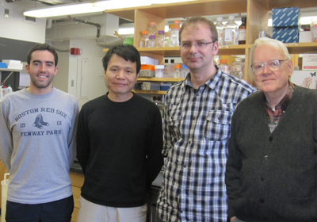

News Archives : 2012 : More Tricks in Bacterial Chemotaxis
by Howard Berg
April 17, 2012

(L to R) Richard Branch, Junhua Yuan, Basarab Hosu and Howard Berg
The bacterium Escherichia coli decides whether life is getting better or worse by swimming about and comparing measurements of concentrations of chemicals made over the past second with similar measurements made a few seconds earlier. If the concentrations of chemicals that the cell likes are going up, the cell tends to keep swimming in the same direction; if not, it tries a new direction, more or less at random.
The receptor system phosphorylates a small signaling protein called CheY, which when phosphorylated binds to the flagellar motors and promotes changes in swimming direction. When a cell swims in a favorable direction, the concentration of CheY-P falls, and changes in swimming direction are suppressed. A dozen years ago, Philippe Cluzel and colleagues (Cluzel et al., Science, 2000) found that flagellar motors are extremely sensitive to CheY-P. At a CheY-P concentration of about 2 micromolar, cells swim smoothly all the time; at about 4 micromolar, they change directions all the time. For chemotaxis to work, the concentration of CheY-P needs to be near 3 micromolar, where cell behavior is sensitive to small changes in receptor occupancy.
So people worried about how the chemotaxis signaling network might be designed to fix the steady-state CheY-P concentration near 3 micromolar. In work reported in Nature, we found that such fine tuning is not necessary. Instead, when the steady-state concentration of CheY- P falls, the cell remodels its flagellar motors so that they are more sensitive to CheY-P. It adds more copies of a basal component called FliM. This is a slow process, occurring over several minutes, not a fast process, such as the one that enables cells to respond to chemical gradients. It is designed to match the operating point of the motors to the ambient concentration of CheY-P. It is a form of adaptation that occurs at the output of the chemotaxis signaling pathway.
Read more in Nature
[April 17, 2012]